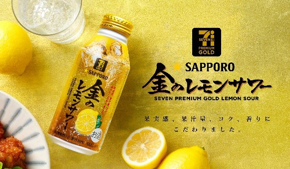

商品強情報
- 発売日
- 2021 年 03 月 29 日
- 価格
- 217 円（税込)
- 内容量
- 400ml
- アルコール度数
- 6%
- 備考
- 一部店舗ではお取り扱いをしておりません。
セブンプレミアム ゴールド初のレモンサワー誕生！
果汁はもちろんのこと、香り、甘さ、お酒、成分まで、とことんレモンにこだわって作り上げたレモンサワーです。
2種類のシチリア産レモンの中でも、手摘み朝収穫したものを、たっぷりレモン
1個分使いました。レモン畑の木になったままのレモンの香り、レモンを丸ごとを粉砕して漬けた液中粉砕浸漬酒、レモン果皮から抽出したレモン由来の甘みである「スイートレモンピールエキス」など、細部までとことんこだわった、本格的な味わいです。
おうち時間を至極のひと時にする、贅沢な一杯をお楽しみください。
呑み知識
【レモンハイ】と【レモンサワー】の違い
結論：ほとんど違いはないです
レモンハイは「レモンチューハイ」の略称であり“焼酎を炭酸で割ったもの”
つまり焼酎を使うという縛りがあるということくらいです。
呑みレポ
商品説明の通り、レモンにこだわりを感じる一品。
レモンサワーというよりレモネードに近く、アルコールの香りは控えめです。
アルコールの香りが苦手な人に寄り添った作りになっていると感じました。
飲み口はお酒に珍しくキャップタイプのところを見るとお酒が少ししか飲めない人への配慮だと思います。
呑み方のアレンジとして蜂蜜を加えるとよりレモネードに近くなり、気づいたら呑み切っているなんてことも…
呑みペースが早いとその分酔いの回りも早くなるのでペース配分には気をつけましょう
Seven & i Holdings Co. Ltd. All Rights Reserved. -引用呑みプチレシピ 【金のレモネードサワー】
材料
- 金のレモンサワー
- 氷
- 蜂蜜 スプーン１杯
- 1
- グラスに氷を入れます
- 2
- 氷の入ったグラスに「金のレモンサワー」を注ぎます
- 2
- スプーンで蜂蜜をすくい、グラスをそのスプーンでかき混ぜて完成です